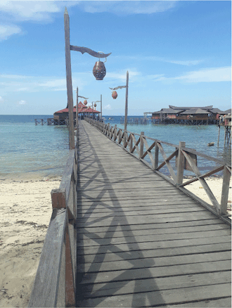
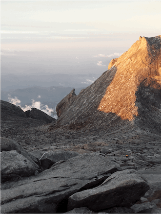
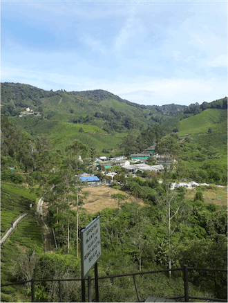
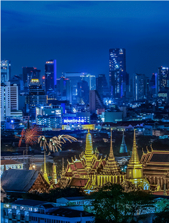
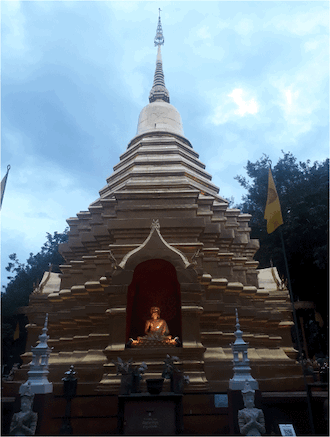
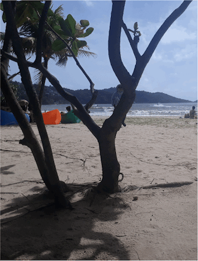
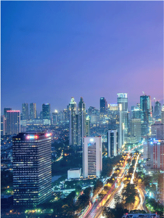
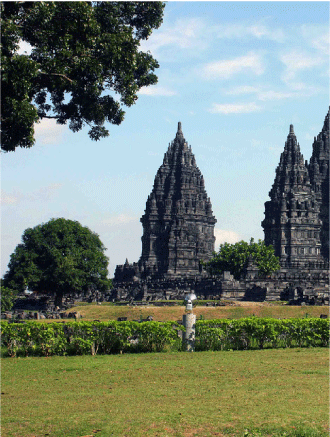
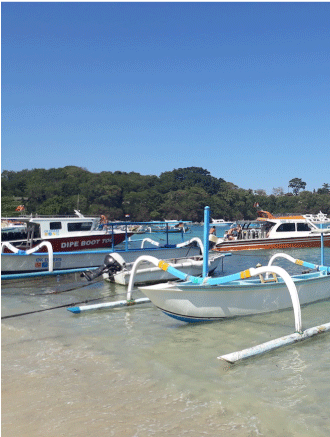

Malaysia
多様な民族・文化・料理・自然が集結する国
Pulau Mabul

広さ約20ヘクタールの小島。リゾートの目の前には真っ白なビーチとサンゴ礁が広がる。ダイビングにぴったしの島で、疲れたときはハンモックでリラックス。
Mt. Kinabaku

ボルネオ島・サバ州にあるマレーシア最高峰の山である。標高4,095.2を誇り、頂上の景色は圧巻。富士山を登ったことがある人にオススメ。
Cameron Highlands

避暑地として人気の高原リゾート。標高が1,500mを超えるため、年間を通じて気温が20℃前後と涼しい。茶畑や昆虫園などの観光地がある。
Thailand
王宮、古代遺跡、寺院、ビーチなどで知られる'微笑みの国'
Bangkok

タイの首都で、世界でもトップクラスの観光地。伝統的な寺院、トゥクトゥクに乗って回るにぎやかな中華街、ボートで向かう水上マーケットなど、多彩な魅力が満載。
Chiang Mai

タイ第2の都市。旧市街やその周辺には寺院やレストランがが点在する。郊外に行けば、ラフティング、象乗り、首長族の村訪問などのアクティビティを体験できる。
Phuket

タイ最大の島で、世界有数のリゾート地として知られる。エメラルド色の海と真っ白な砂浜の美しさから「アンダマン海の真珠」とたとえられる。マリンスポーツやジャングルを堪能できる。
Indonesia
赤道にまたがり東西5110㎞に延びる、世界最多の島嶼をもつ
Jakarta

東京-横浜圏についで世界第2位の都市圏。高級モールから屋台まで、急速な発展と混沌が見られる街。
Jawa Island

石組みで建築された壮麗な寺院群が見られる世界遺産・プランバナン寺院群が有名。遺跡巡りは、ツアーに申し込んでガイドをつけるのがオススメ。
Bali Island

透明な海、そこに広がる豊かな珊瑚と魚の世界。バリ島は世界有数のダイビングスポットとして人気。第二次世界大戦時に沈んだ全長120mのリバティ号は必見。